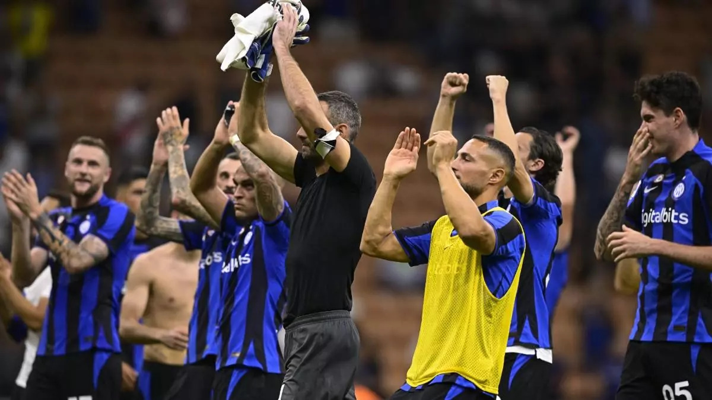

Inter domina la Serie A
El conjunto neroazzurro se mantiene en lo más alto de la tabla con una campaña sólida y contundente. Con 87 puntos, Inter marca una diferencia importante sobre sus perseguidores y se perfila como el gran candidato al título.